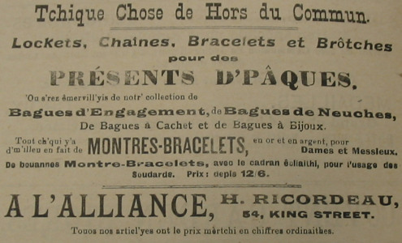
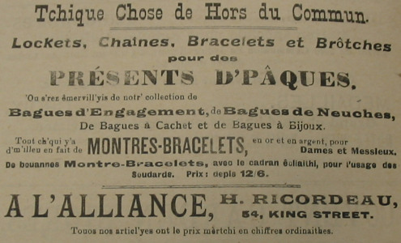

1917
 

|
A l'Alliance. H. Ricordeau. Argent'tie,Bagues de Neuches et d'Engagement,
Chaînes et Montres.
La préchaine porte de d'sièz d'Gruchy: Rue d'Driethe - 54 King Street |
Chronique de Jersey Septembre 1913
|
Voul'ous saver tchi chouaisi pour
Allez vaie les f'nêtres et la boutique à (La préchaine porte de d'sièz es Mêssieux d'Gruchy) |
||
|
Bagues, |
Lunettes |
A l'Alliance 54, King Street. |
|
Montres, |
Longues-veues |
|
|
Argent'tie, |
Broches |
|
|
Ornements, |
Chaînes |
|
|
Tchullièrs, |
Holouoges. |
|
|
Touos les Clients ont un Almanâ avec le pus risiblye portrait. |
||
Chronique de Jersey Avri 1914
|
Voul'ous saver tchi chouaisi pour
Allez vaie les f'nêtres et la boutique à (La préchaine porte de d'sièz es Mêssieux d'Gruchy) |
||
| Bagues, | Lunettes |
A l'Alliance 54, King Street. |
| Montres, | Longues-veues | |
| Argent'tie, | Broches | |
| Ornements, | Chaînes | |
| Tchullièrs, | Holouoges. | |
|
Touos les Clients ont un Almanâ avec le pus risiblye portrait. |
||
Chronique de Jersey 1914
|
Exposition de Noué A l'Alliance, H. Ricordeau, 54, King St. V'nez vaie notre chouaix delockets et de chaînes, bagues d'engagements, bagues à cachet, bracelets en or et bangles.
Nous avons l'pus biaux chouaix de Objets de Sheffield en plaqué, cadres pour photographies
Voyez nos vitrines. Touos nos articl'yes ont le prix en Suisse, les montres ont été augmentées de 50 pour cent. Notre stock fut acaté d'vant et c'est pourtchi nous pouvons les vendre à millieu marchi.
|
Chroniques de Jersey 24/12/1919
|
Es siens qui veulent acater de biaux cadeaux. Montres - Bracelets, en or et argent,Pour Dames et Messieurs.
Bagues d'Engagement, Bagues de Neuches,
Tout ch'qui y'a milleur en fait de cadeaux en argent ou en A l'Alliance, H. Ricordeau, 54, King St. Touos nos articl'yes ont le prix mèrtchi en chiffres ordinaires. |
Viyiz étout: